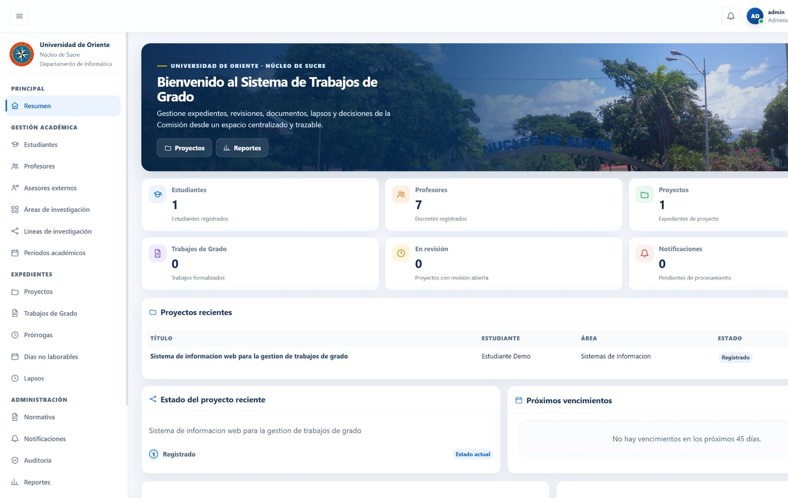
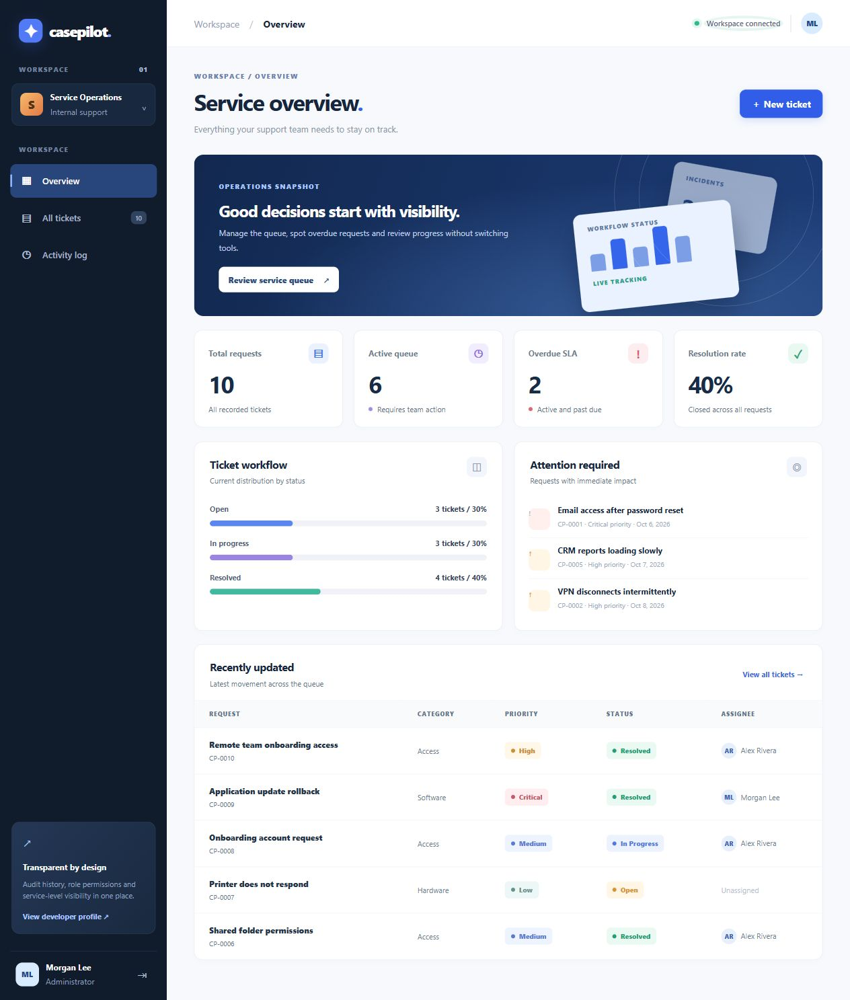
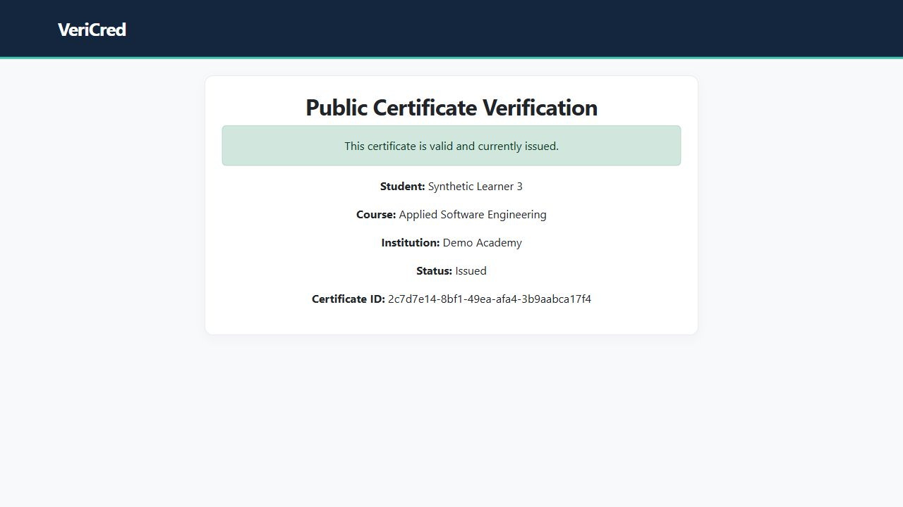
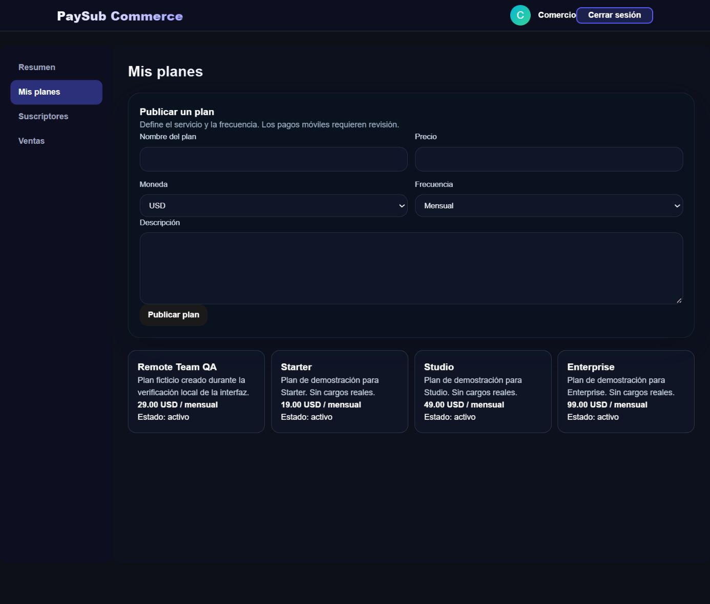

TOOLS IN PRACTICE
WordPress & PHP
Functional QA
PHP & Laravel
React & SQL
Paid assignments
Work completed
for real clients.
Individual freelance assignments and paid technical exercises. Education and portfolio projects are listed separately.
First Cognition · through Upwork · Nov 2025 - Jan 2026
WordPress plugin customization
One paid assignment adapting a blog and articles plugin to the client's reference design. The client implementation stays private. The separate public lab demonstrates a related article-card workflow.
Read the WordPress evidence ↗Voxgig · October 2026 · Two paid exercises
SDK verification and technical review
Generated an unofficial TypeScript SDK with Voxgig tooling, checked its generated suite and live API behavior, and completed a critical review of Jostraca regeneration behavior. These are paid tasks, not formal employment.
View code and verification ↗
Selected work
From a process
to a working application.
Four projects with documented workflows, automated checks and concrete limits. Every screenshot uses synthetic data.

Academic workflow · Java
01
From a thesis proposal to committee review, document versions and a defense schedule. One traceable academic workflow.
Java 21 / Spring Boot / JPA / SQL

IT service operations · Python
02
A support queue with ownership, service deadlines and an activity trail. Run it locally without a cloud account.
Python / SQLite / JavaScript / HTTP

Certificate verification · Django
03
Issue certificates through an approval workflow, then verify their status through a public QR link.
Python / Django / QR codes / SQL

Subscription workflows · Laravel
04
Merchant plans, client subscriptions and bank-transfer review, with authorization enforced in the API.
PHP / Laravel / React / SQL
More engineering practice: AWS data pipeline and Flask service catalogs.
Additional technical work
TypeScript SDK
for a currency API.
A paid technical exercise in SDK generation, reproducible builds and API verification.
API client · TypeScript
Voxgig exercise
Frankfurter v2 SDK
I generated an unofficial TypeScript client with the Voxgig SDK tools, then built it and verified the generated test suite and live API behavior. The source includes a reproducible generation script and a developer experience report.
TypeScript / Node.js / HTTP / OpenAPI
Live checks cover EUR/USD, EUR/EUR identity, currency details and invalid-currency rejection. This is a verified technical exercise; the npm package has not been published. Read the developer experience report ↗
Practical freelance help
A clear scope.
A useful result.
Send a page, a problem and the result you need. Scope, timing and compensation are agreed before work begins. También atiendo solicitudes en español.
WordPress content updates
Update existing page text, links, images and articles, then check the changes on desktop and mobile. Custom plugin work is scoped separately.
Manual web QA
Check one agreed user flow on desktop and mobile. Receive a test checklist and reproducible bug reports with expected versus actual behavior, evidence and priority.
Natural photo correction
Photoshop adjustments for exposure, color and crops. Send a sample and the intended result to agree on the work.
A quote follows the scope, deliverables and timing we agree on.
How I work
Make the behavior
easy to review.
My development workflow combines code review, regression tests and hands-on checks.
01
Understand the workflow
Model roles, states and data before adding screens. Make approval and ownership rules explicit.
02
Reproduce the failure
Turn a demonstrated bug into a regression check, then verify the corrected behavior.
03
Deliver evidence
Keep setup instructions, synthetic demos, test results and known limits alongside the code.
About me
Building my next
chapter in software.
I’m an advanced Informatics undergraduate at Universidad de Oriente, Núcleo Sucre. My degree is in progress. My academic and personal projects focus on backend logic, databases and usable web interfaces.
My paid freelance experience includes one WordPress plugin customization and three Photoshop assignments through Upwork, plus two paid technical exercises for Voxgig. My academic and personal projects include functional testing and workflow automation. I’m looking for a remote junior development or QA role where I can contribute, receive thoughtful review and keep improving.
Location
Cumaná, Venezuela · UTC−4
Development focus
Backend, workflows & testing
Continuing study
Cloud fundamentals & software design